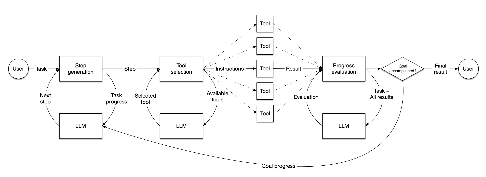

构建智能体#
在LlamaIndex中，智能体是由大语言模型驱动的半自主软件模块，它接收任务并执行一系列步骤来完成任务。智能体配备一组工具，这些工具可以是任意函数或完整的LlamaIndex查询引擎，它会选择最佳可用工具来完成每个步骤。每完成一个步骤，智能体会判断任务是否已完成（此时将结果返回给用户），或者是否需要继续执行下一步（此时循环回到起点）。
在LlamaIndex中，您可以选择从头构建自定义智能工作流（详见"构建工作流"章节），也可以使用我们预建的智能工作流如FunctionAgent（简单的函数/工具调用智能体）或AgentWorkflow（能管理多个智能体的智能体）。本教程将介绍如何使用FunctionAgent构建函数调用智能体。
要了解构建多智能体系统的各种方法，请参阅"多智能体系统"。

快速开始#
所有代码可在智能体教程仓库中找到。
为避免冲突并保持环境整洁，我们将新建Python虚拟环境。您可以使用任何虚拟环境管理器，这里我们使用poetry：
poetry init
poetry shell
然后安装LlamaIndex库和其他必要依赖：
pip install llama-index-core llama-index-llms-openai python-dotenv
如遇安装问题，请参考更详细的安装指南。
OpenAI密钥#
我们的智能体将使用OpenAI的gpt-4o-mini大语言模型，因此需要API密钥。获取密钥后，可将其放入项目根目录的.env文件：
OPENAI_API_KEY=sk-proj-xxxx
若不想使用OpenAI，也可选择其他大语言模型包括本地模型。注意智能体需要性能较强的模型，小型模型可能不够可靠。
导入依赖#
首先导入所需的LlamaIndex组件，并从.env文件加载环境变量：
from dotenv import load_dotenv
load_dotenv()
from llama_index.llms.openai import OpenAI
from llama_index.core.agent.workflow import FunctionAgent
创建基础工具#
这个简单示例将创建两个工具：一个用于数字乘法运算，另一个用于加法运算。
def multiply(a: float, b: float) -> float:
"""将两个数字相乘并返回乘积"""
return a * b
def add(a: float, b: float) -> float:
"""将两个数字相加并返回和"""
return a + b
如您所见，这些都是常规Python函数。智能体将通过工具名称、参数和文档字符串来判断工具功能及其适用性，因此确保文档字符串描述清晰准确非常重要。类型提示则用于确定预期参数和返回类型。
初始化大语言模型#
本次任务将由gpt-4o-mini完成：
llm = OpenAI(model="gpt-4o-mini")
您也可以选择其他通过API访问的流行模型，如Mistral、Anthropic的Claude或Google的Gemini。
初始化智能体#
现在创建我们的智能体。它需要工具数组、大语言模型和系统提示（用于指定智能体类型）。实际应用中系统提示通常比这个更详细！
workflow = FunctionAgent(
tools=[multiply, add],
llm=llm,
system_prompt="你是一个能使用工具执行基础数学运算的智能体。",
)
实际上GPT-4o-mini足够智能，无需工具就能完成简单运算，因此我们在提示中特别指定要使用工具。
除FunctionAgent外，LlamaIndex还提供其他智能体类型，如ReActAgent和CodeActAgent，它们采用不同的提示策略来执行工具。
提问测试#
现在可以让智能体进行数学运算：
response = await workflow.run(user_msg="20+(2*4)等于多少？")
print(response)
注意这是异步代码。在notebook环境中可直接运行，若要在常规Python中运行，需将其包裹在异步函数中：
async def main():
response = await workflow.run(user_msg="20+(2*4)等于多少？")
print(response)
if __name__ == "__main__":
import asyncio
asyncio.run(main())
您将看到类似输出：
(20 + (2乘以4))的结果是28。
完整代码请参考仓库。
恭喜！您已构建了最基础的智能体类型。接下来请学习如何使用预构建工具。